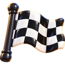
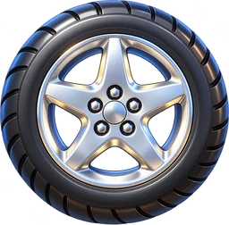
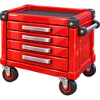

← 놀이별
보드게임
스피드 레이스
❓
🔊
🚗 차고
꾸미기
사기
← 차고로
차고를 열고 있어요…


성능
색깔 선택
바퀴
도색
스티커
코스 선택

꾸미기
출발!
»
순위
1
/ 4
0
km/h
🚗
🔥 니트로
0:00.0
차고를 여는 중…
이렇게 놀아요
차는
저절로 앞으로
달려요.
◀ ▶
버튼(또는 키보드 방향키)으로 방향만 바꿔요.
길에 떠 있는
파란 구슬
을 모으면
🔥 니트로
가 차올라요. 🔥 버튼(또는 스페이스 키)을 누르면 번쩍 빨라져요!
길 밖으로 나가면 살짝 튕겨 나요. 다치지 않아요. 다만 속도가 줄어요.
다른 차와 부딪쳐도 괜찮아요. 살짝 밀릴 뿐이에요.
🛑 버튼(또는 ↓ 키)을 누르면
천천히
달려요. 커브에서 써 보세요.
1등
으로 결승선을 지나가 봐요!
알겠어요